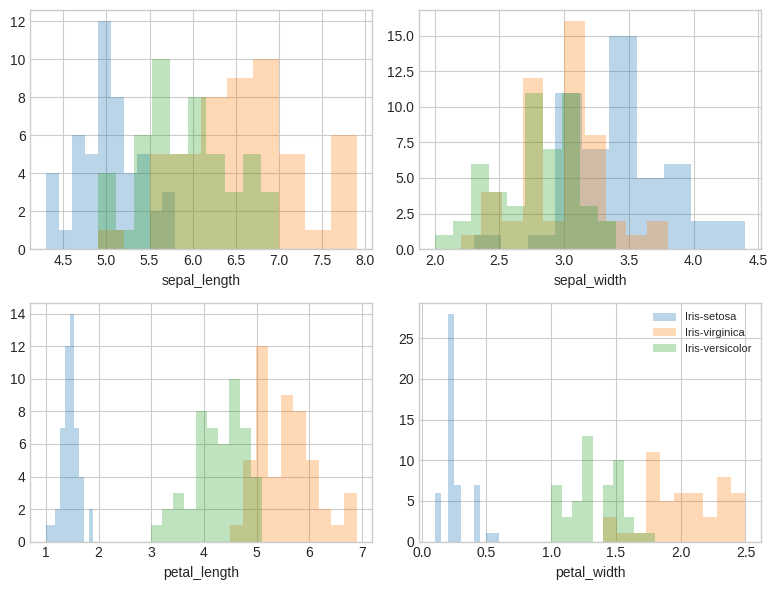
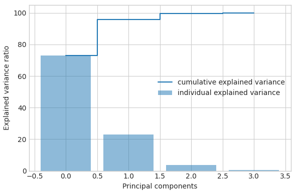
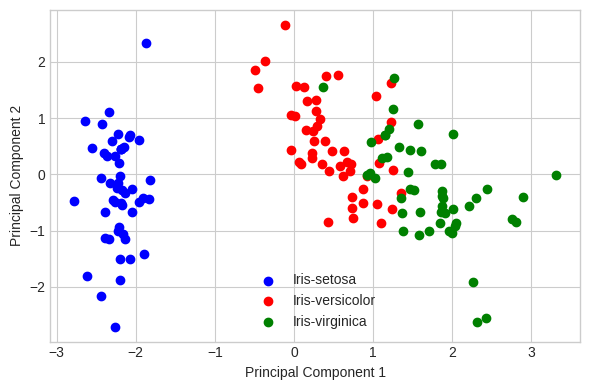
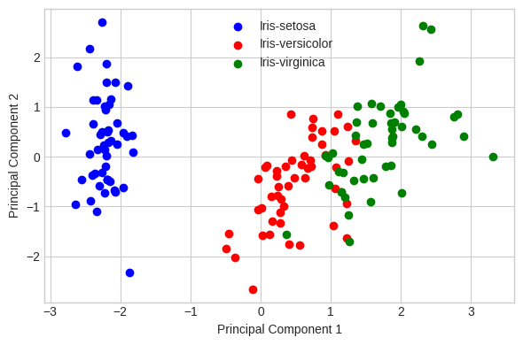

ANNBP_PCA#
import pandas as pd
import numpy as np
import seaborn as sns
import matplotlib.pyplot as plt
df=pd.read_csv('https://raw.githubusercontent.com/whintaaa/iris/main/iris.csv')
df.head()
| sepal_l | sepal_w | petal_l | petal_w | class | |
|---|---|---|---|---|---|
| 0 | 5.1 | 3.5 | 1.4 | 0.2 | Iris-setosa |
| 1 | 4.9 | 3.0 | 1.4 | 0.2 | Iris-setosa |
| 2 | 4.7 | 3.2 | 1.3 | 0.2 | Iris-setosa |
| 3 | 4.6 | 3.1 | 1.5 | 0.2 | Iris-setosa |
| 4 | 5.0 | 3.6 | 1.4 | 0.2 | Iris-setosa |
df['class'].value_counts()
Iris-setosa 50
Iris-versicolor 50
Iris-virginica 50
Setosa 50
Versicolor 50
Virginica 50
Name: class, dtype: int64
df.columns
Index(['sepal_l', 'sepal_w', 'petal_l', 'petal_w', 'class'], dtype='object')
X=df.iloc[:,0:4].values
y=df.iloc[:,4].values
label_dict={1: 'Iris-setosa',
2: 'Iris-virginica',
3: 'Iris-versicolor'}
feature_dict={0: 'sepal_length',1: 'sepal_width',2: 'petal_length',3: 'petal_width'}
with plt.style.context('seaborn-whitegrid'):
plt.figure(figsize=(8,6))
for i in range(4):
plt.subplot(2,2,i+1)
for lab in ('Iris-setosa','Iris-virginica','Iris-versicolor'):
plt.hist(X[y==lab, i],
label=lab,
bins=10,
alpha=0.3)
plt.xlabel(feature_dict[i])
plt.legend(loc='upper right', fancybox=True,fontsize=8)
plt.tight_layout()
plt.show()

from sklearn.preprocessing import StandardScaler
X_std=StandardScaler().fit_transform(X)
mean_vec=np.mean(X_std,axis=0)
cov_mat=(X_std-mean_vec).T.dot((X_std-mean_vec))/(X_std.shape[0]-1)
print("Covariance Matrix \n%s" %cov_mat)
Covariance Matrix
[[ 1.00334448 -0.11385853 0.87466949 0.82068276]
[-0.11385853 1.00334448 -0.42590552 -0.36254685]
[ 0.87466949 -0.42590552 1.00334448 0.9660308 ]
[ 0.82068276 -0.36254685 0.9660308 1.00334448]]
print("Numpy Covariance matrix \n%s" %np.cov(X_std.T))
Numpy Covariance matrix
[[ 1.00334448 -0.11385853 0.87466949 0.82068276]
[-0.11385853 1.00334448 -0.42590552 -0.36254685]
[ 0.87466949 -0.42590552 1.00334448 0.9660308 ]
[ 0.82068276 -0.36254685 0.9660308 1.00334448]]
cov_mat=np.cov(X_std.T)
eig_vals, eig_vecs=np.linalg.eig(cov_mat)
print("Eigenvectors \n%s" %eig_vecs)
print("Eigenvelues \n%s" %eig_vals)
Eigenvectors
[[ 0.52171778 -0.37486813 -0.72029777 0.26164013]
[-0.26636854 -0.9244304 0.24319552 -0.12382316]
[ 0.58083504 -0.02280557 0.14150831 -0.80130267]
[ 0.56523359 -0.06619834 0.63403664 0.52357072]]
Eigenvelues
[2.92439167 0.92070445 0.14755111 0.02073069]
corr_mat1=np.corrcoef(X_std.T)
eig_vals, eig_vecs=np.linalg.eig(corr_mat1)
print("Eigenvectors \n%s" %eig_vecs)
print("Eigenvelues \n%s" %eig_vals)
Eigenvectors
[[ 0.52171778 -0.37486813 -0.72029777 0.26164013]
[-0.26636854 -0.9244304 0.24319552 -0.12382316]
[ 0.58083504 -0.02280557 0.14150831 -0.80130267]
[ 0.56523359 -0.06619834 0.63403664 0.52357072]]
Eigenvelues
[2.9146437 0.91763544 0.14705928 0.02066158]
cor_mat2=np.corrcoef(X.T)
eig_vals, eig_vecs=np.linalg.eig(cor_mat2)
print("Eigenvectors \n%s" %eig_vecs)
print("Eigenvelues \n%s" %eig_vals)
Eigenvectors
[[ 0.52171778 -0.37486813 -0.72029777 0.26164013]
[-0.26636854 -0.9244304 0.24319552 -0.12382316]
[ 0.58083504 -0.02280557 0.14150831 -0.80130267]
[ 0.56523359 -0.06619834 0.63403664 0.52357072]]
Eigenvelues
[2.9146437 0.91763544 0.14705928 0.02066158]
u, s, v=np.linalg.svd(X_std.T)
u
array([[-0.52171778, -0.37486813, 0.72029777, 0.26164013],
[ 0.26636854, -0.9244304 , -0.24319552, -0.12382316],
[-0.58083504, -0.02280557, -0.14150831, -0.80130267],
[-0.56523359, -0.06619834, -0.63403664, 0.52357072]])
for ev in eig_vecs.T:
np.testing.assert_array_almost_equal(1.0, np.linalg.norm(ev))
print("Everithing is ok")
Everithing is ok
# Make a list of (eigenvalue, eigenvector) tuples
eig_pairs = [(np.abs(eig_vals[i]), eig_vecs[:,i]) for i in range(len(eig_vals))]
# Sort the (eigenvalue, eigenvector) tuples from high to low
eig_pairs.sort(key=lambda x: x[0], reverse=True)
# Visually confirm that the list is correctly sorted by decreasing eigenvalues
print('Eigenvalues in descending order:')
for i in eig_pairs:
print(i[0])
Eigenvalues in descending order:
2.914643702203565
0.9176354378175842
0.14705927550261844
0.020661584476230434
tot = sum(eig_vals)
var_exp = [(i / tot)*100 for i in sorted(eig_vals, reverse=True)]
cum_var_exp = np.cumsum(var_exp)
with plt.style.context('seaborn-whitegrid'):
plt.figure(figsize=(6, 4))
plt.bar(range(4), var_exp, alpha=0.5, align='center',
label='individual explained variance')
plt.step(range(4), cum_var_exp, where='mid',
label='cumulative explained variance')
plt.ylabel('Explained variance ratio')
plt.xlabel('Principal components')
plt.legend(loc='best')
plt.tight_layout()

matrix_w = np.hstack((eig_pairs[0][1].reshape(4,1),
eig_pairs[1][1].reshape(4,1)))
print('Matrix W:\n', matrix_w)
Matrix W:
[[ 0.52171778 -0.37486813]
[-0.26636854 -0.9244304 ]
[ 0.58083504 -0.02280557]
[ 0.56523359 -0.06619834]]
Y = X_std.dot(matrix_w)
with plt.style.context('seaborn-whitegrid'):
plt.figure(figsize=(6, 4))
for lab, col in zip(('Iris-setosa', 'Iris-versicolor', 'Iris-virginica'),
('blue', 'red', 'green')):
plt.scatter(Y[y==lab, 0],
Y[y==lab, 1],
label=lab,
c=col)
plt.xlabel('Principal Component 1')
plt.ylabel('Principal Component 2')
plt.legend(loc='lower center')
plt.tight_layout()
plt.show()

from sklearn.decomposition import PCA as sklearnPCA
sklearn_pca = sklearnPCA(n_components=2)
Y_sklearn = sklearn_pca.fit_transform(X_std)
with plt.style.context('seaborn-whitegrid'):
plt.figure(figsize=(6, 4))
for lab, col in zip(('Iris-setosa', 'Iris-versicolor', 'Iris-virginica'),
('blue', 'red', 'green')):
plt.scatter(Y_sklearn[y==lab, 0],
Y_sklearn[y==lab, 1],
label=lab,
c=col)
plt.xlabel('Principal Component 1')
plt.ylabel('Principal Component 2')
plt.legend(loc='upper center')
plt.tight_layout()
plt.show()

data=pd.DataFrame(Y_sklearn)
data.columns=['PC1','PC2']
data
| PC1 | PC2 | |
|---|---|---|
| 0 | -2.264652 | 0.492794 |
| 1 | -2.083700 | -0.664823 |
| 2 | -2.366105 | -0.330254 |
| 3 | -2.301801 | -0.586438 |
| 4 | -2.389345 | 0.660727 |
| ... | ... | ... |
| 295 | 1.870506 | 0.384920 |
| 296 | 1.561554 | -0.900968 |
| 297 | 1.521002 | 0.267951 |
| 298 | 1.374565 | 1.013822 |
| 299 | 0.959972 | -0.023295 |
300 rows × 2 columns
data['class']=df['class']
data
| PC1 | PC2 | class | |
|---|---|---|---|
| 0 | -2.264652 | 0.492794 | Iris-setosa |
| 1 | -2.083700 | -0.664823 | Iris-setosa |
| 2 | -2.366105 | -0.330254 | Iris-setosa |
| 3 | -2.301801 | -0.586438 | Iris-setosa |
| 4 | -2.389345 | 0.660727 | Iris-setosa |
| ... | ... | ... | ... |
| 295 | 1.870506 | 0.384920 | Virginica |
| 296 | 1.561554 | -0.900968 | Virginica |
| 297 | 1.521002 | 0.267951 | Virginica |
| 298 | 1.374565 | 1.013822 | Virginica |
| 299 | 0.959972 | -0.023295 | Virginica |
300 rows × 3 columns
dt=data
dt
| PC1 | PC2 | class | |
|---|---|---|---|
| 0 | -2.264652 | 0.492794 | Iris-setosa |
| 1 | -2.083700 | -0.664823 | Iris-setosa |
| 2 | -2.366105 | -0.330254 | Iris-setosa |
| 3 | -2.301801 | -0.586438 | Iris-setosa |
| 4 | -2.389345 | 0.660727 | Iris-setosa |
| ... | ... | ... | ... |
| 295 | 1.870506 | 0.384920 | Virginica |
| 296 | 1.561554 | -0.900968 | Virginica |
| 297 | 1.521002 | 0.267951 | Virginica |
| 298 | 1.374565 | 1.013822 | Virginica |
| 299 | 0.959972 | -0.023295 | Virginica |
300 rows × 3 columns
from sklearn.neural_network import MLPClassifier
from sklearn.model_selection import train_test_split
from sklearn.metrics import accuracy_score
from sklearn.metrics import confusion_matrix
y = dt['class']
x = dt.drop(['class'], axis=1)
x_train, x_test, y_train, y_test = train_test_split(x,y, test_size= 0.2, random_state=27)
clf = MLPClassifier(hidden_layer_sizes=(100,100,100), max_iter=1000, alpha=0.0001,
solver='sgd', verbose=10, random_state=21,tol=0.001)
clf.fit(x_train, y_train)
y_pred=clf.predict(x_test)
Iteration 1, loss = 1.82761943
Iteration 2, loss = 1.82520648
Iteration 3, loss = 1.82152463
Iteration 4, loss = 1.81684246
Iteration 5, loss = 1.81140076
Iteration 6, loss = 1.80524732
Iteration 7, loss = 1.79866762
Iteration 8, loss = 1.79175197
Iteration 9, loss = 1.78453446
Iteration 10, loss = 1.77734423
Iteration 11, loss = 1.76988139
Iteration 12, loss = 1.76264651
Iteration 13, loss = 1.75533662
Iteration 14, loss = 1.74810268
Iteration 15, loss = 1.74099407
Iteration 16, loss = 1.73394955
Iteration 17, loss = 1.72703817
Iteration 18, loss = 1.72011720
Iteration 19, loss = 1.71337058
Iteration 20, loss = 1.70675748
Iteration 21, loss = 1.70008357
Iteration 22, loss = 1.69369700
Iteration 23, loss = 1.68723782
Iteration 24, loss = 1.68081492
Iteration 25, loss = 1.67450511
Iteration 26, loss = 1.66814582
Iteration 27, loss = 1.66186067
Iteration 28, loss = 1.65558942
Iteration 29, loss = 1.64931711
Iteration 30, loss = 1.64310944
Iteration 31, loss = 1.63693110
Iteration 32, loss = 1.63082692
Iteration 33, loss = 1.62472618
Iteration 34, loss = 1.61870424
Iteration 35, loss = 1.61266238
Iteration 36, loss = 1.60663814
Iteration 37, loss = 1.60058751
Iteration 38, loss = 1.59456778
Iteration 39, loss = 1.58851204
Iteration 40, loss = 1.58245373
Iteration 41, loss = 1.57648820
Iteration 42, loss = 1.57039889
Iteration 43, loss = 1.56443733
Iteration 44, loss = 1.55847949
Iteration 45, loss = 1.55259550
Iteration 46, loss = 1.54672660
Iteration 47, loss = 1.54088918
Iteration 48, loss = 1.53499835
Iteration 49, loss = 1.52915877
Iteration 50, loss = 1.52329378
Iteration 51, loss = 1.51745281
Iteration 52, loss = 1.51159854
Iteration 53, loss = 1.50573994
Iteration 54, loss = 1.49994497
Iteration 55, loss = 1.49409708
Iteration 56, loss = 1.48830528
Iteration 57, loss = 1.48252454
Iteration 58, loss = 1.47673900
Iteration 59, loss = 1.47105563
Iteration 60, loss = 1.46532700
Iteration 61, loss = 1.45966006
Iteration 62, loss = 1.45397385
Iteration 63, loss = 1.44834327
Iteration 64, loss = 1.44270389
Iteration 65, loss = 1.43705097
Iteration 66, loss = 1.43136221
Iteration 67, loss = 1.42580508
Iteration 68, loss = 1.42019647
Iteration 69, loss = 1.41460382
Iteration 70, loss = 1.40913509
Iteration 71, loss = 1.40359868
Iteration 72, loss = 1.39818440
Iteration 73, loss = 1.39269368
Iteration 74, loss = 1.38727749
Iteration 75, loss = 1.38190196
Iteration 76, loss = 1.37655163
Iteration 77, loss = 1.37129323
Iteration 78, loss = 1.36604790
Iteration 79, loss = 1.36084941
Iteration 80, loss = 1.35576035
Iteration 81, loss = 1.35067781
Iteration 82, loss = 1.34560511
Iteration 83, loss = 1.34057195
Iteration 84, loss = 1.33558616
Iteration 85, loss = 1.33060620
Iteration 86, loss = 1.32573017
Iteration 87, loss = 1.32085562
Iteration 88, loss = 1.31607310
Iteration 89, loss = 1.31137828
Iteration 90, loss = 1.30665534
Iteration 91, loss = 1.30206858
Iteration 92, loss = 1.29747104
Iteration 93, loss = 1.29295520
Iteration 94, loss = 1.28848492
Iteration 95, loss = 1.28405580
Iteration 96, loss = 1.27967646
Iteration 97, loss = 1.27536461
Iteration 98, loss = 1.27115707
Iteration 99, loss = 1.26693646
Iteration 100, loss = 1.26290826
Iteration 101, loss = 1.25889012
Iteration 102, loss = 1.25486338
Iteration 103, loss = 1.25102251
Iteration 104, loss = 1.24709853
Iteration 105, loss = 1.24331613
Iteration 106, loss = 1.23959979
Iteration 107, loss = 1.23588811
Iteration 108, loss = 1.23225326
Iteration 109, loss = 1.22864993
Iteration 110, loss = 1.22516307
Iteration 111, loss = 1.22162735
Iteration 112, loss = 1.21821304
Iteration 113, loss = 1.21477929
Iteration 114, loss = 1.21145306
Iteration 115, loss = 1.20813547
Iteration 116, loss = 1.20487925
Iteration 117, loss = 1.20179960
Iteration 118, loss = 1.19862152
Iteration 119, loss = 1.19550813
Iteration 120, loss = 1.19248325
Iteration 121, loss = 1.18942469
Iteration 122, loss = 1.18645876
Iteration 123, loss = 1.18350429
Iteration 124, loss = 1.18059969
Iteration 125, loss = 1.17775680
Iteration 126, loss = 1.17495936
Iteration 127, loss = 1.17230716
Iteration 128, loss = 1.16951724
Iteration 129, loss = 1.16688634
Iteration 130, loss = 1.16421901
Iteration 131, loss = 1.16158614
Iteration 132, loss = 1.15899474
Iteration 133, loss = 1.15641967
Iteration 134, loss = 1.15389971
Iteration 135, loss = 1.15138653
Iteration 136, loss = 1.14889025
Iteration 137, loss = 1.14650343
Iteration 138, loss = 1.14409025
Iteration 139, loss = 1.14175202
Iteration 140, loss = 1.13943629
Iteration 141, loss = 1.13718151
Iteration 142, loss = 1.13494256
Iteration 143, loss = 1.13271793
Iteration 144, loss = 1.13048997
Iteration 145, loss = 1.12831274
Iteration 146, loss = 1.12625308
Iteration 147, loss = 1.12401950
Iteration 148, loss = 1.12192308
Iteration 149, loss = 1.11980908
Iteration 150, loss = 1.11779371
Iteration 151, loss = 1.11586897
Iteration 152, loss = 1.11376232
Iteration 153, loss = 1.11184944
Iteration 154, loss = 1.10992105
Iteration 155, loss = 1.10802381
Iteration 156, loss = 1.10623445
Iteration 157, loss = 1.10431732
Iteration 158, loss = 1.10249137
Iteration 159, loss = 1.10075639
Iteration 160, loss = 1.09898363
Iteration 161, loss = 1.09720892
Iteration 162, loss = 1.09541559
Iteration 163, loss = 1.09366234
Iteration 164, loss = 1.09195162
Iteration 165, loss = 1.09026325
Iteration 166, loss = 1.08877218
Iteration 167, loss = 1.08710891
Iteration 168, loss = 1.08554781
Iteration 169, loss = 1.08399670
Iteration 170, loss = 1.08247146
Iteration 171, loss = 1.08111464
Iteration 172, loss = 1.07967327
Iteration 173, loss = 1.07804923
Iteration 174, loss = 1.07660297
Iteration 175, loss = 1.07501527
Iteration 176, loss = 1.07349393
Iteration 177, loss = 1.07214503
Iteration 178, loss = 1.07049302
Iteration 179, loss = 1.06899764
Iteration 180, loss = 1.06771946
Iteration 181, loss = 1.06615422
Iteration 182, loss = 1.06477558
Iteration 183, loss = 1.06352447
Iteration 184, loss = 1.06207608
Iteration 185, loss = 1.06065534
Iteration 186, loss = 1.05931836
Iteration 187, loss = 1.05799104
Iteration 188, loss = 1.05663236
Iteration 189, loss = 1.05541209
Iteration 190, loss = 1.05420592
Iteration 191, loss = 1.05285546
Iteration 192, loss = 1.05167486
Iteration 193, loss = 1.05045901
Iteration 194, loss = 1.04920421
Iteration 195, loss = 1.04799633
Iteration 196, loss = 1.04671248
Iteration 197, loss = 1.04555284
Iteration 198, loss = 1.04432387
Iteration 199, loss = 1.04323907
Iteration 200, loss = 1.04194522
Iteration 201, loss = 1.04082296
Iteration 202, loss = 1.03974491
Iteration 203, loss = 1.03866499
Iteration 204, loss = 1.03755730
Iteration 205, loss = 1.03655261
Iteration 206, loss = 1.03541281
Iteration 207, loss = 1.03436963
Iteration 208, loss = 1.03333242
Iteration 209, loss = 1.03239371
Iteration 210, loss = 1.03144376
Iteration 211, loss = 1.03040369
Iteration 212, loss = 1.02943155
Iteration 213, loss = 1.02840048
Iteration 214, loss = 1.02741996
Iteration 215, loss = 1.02648086
Iteration 216, loss = 1.02542087
Iteration 217, loss = 1.02446216
Iteration 218, loss = 1.02361871
Iteration 219, loss = 1.02270289
Iteration 220, loss = 1.02178533
Iteration 221, loss = 1.02088650
Iteration 222, loss = 1.02002736
Iteration 223, loss = 1.01923431
Iteration 224, loss = 1.01832409
Iteration 225, loss = 1.01741886
Iteration 226, loss = 1.01653966
Iteration 227, loss = 1.01566733
Training loss did not improve more than tol=0.001000 for 10 consecutive epochs. Stopping.
accuracy_score(y_test, y_pred)
0.4166666666666667
df = pd.DataFrame({'Real Values':y_test, 'Predicted Values':y_pred})
df
| Real Values | Predicted Values | |
|---|---|---|
| 231 | Versicolor | Iris-versicolor |
| 155 | Setosa | Iris-setosa |
| 235 | Versicolor | Virginica |
| 3 | Iris-setosa | Iris-setosa |
| 152 | Setosa | Iris-setosa |
| 95 | Iris-versicolor | Versicolor |
| 106 | Iris-virginica | Iris-versicolor |
| 165 | Setosa | Iris-setosa |
| 258 | Virginica | Iris-virginica |
| 272 | Virginica | Iris-virginica |
| 188 | Setosa | Setosa |
| 278 | Virginica | Iris-virginica |
| 8 | Iris-setosa | Setosa |
| 74 | Iris-versicolor | Versicolor |
| 23 | Iris-setosa | Iris-setosa |
| 68 | Iris-versicolor | Iris-versicolor |
| 61 | Iris-versicolor | Versicolor |
| 63 | Iris-versicolor | Versicolor |
| 206 | Versicolor | Virginica |
| 137 | Iris-virginica | Iris-virginica |
| 104 | Iris-virginica | Iris-virginica |
| 217 | Versicolor | Versicolor |
| 255 | Virginica | Iris-virginica |
| 147 | Iris-virginica | Iris-virginica |
| 70 | Iris-versicolor | Virginica |
| 296 | Virginica | Iris-virginica |
| 5 | Iris-setosa | Iris-setosa |
| 65 | Iris-versicolor | Virginica |
| 120 | Iris-virginica | Iris-virginica |
| 239 | Versicolor | Iris-versicolor |
| 166 | Setosa | Iris-setosa |
| 49 | Iris-setosa | Iris-setosa |
| 164 | Setosa | Iris-setosa |
| 77 | Iris-versicolor | Iris-virginica |
| 59 | Iris-versicolor | Iris-versicolor |
| 136 | Iris-virginica | Iris-virginica |
| 88 | Iris-versicolor | Versicolor |
| 205 | Versicolor | Versicolor |
| 190 | Setosa | Iris-setosa |
| 7 | Iris-setosa | Iris-setosa |
| 178 | Setosa | Iris-setosa |
| 101 | Iris-virginica | Iris-virginica |
| 90 | Iris-versicolor | Iris-versicolor |
| 139 | Iris-virginica | Iris-virginica |
| 69 | Iris-versicolor | Iris-versicolor |
| 212 | Versicolor | Iris-versicolor |
| 219 | Versicolor | Iris-versicolor |
| 169 | Setosa | Iris-setosa |
| 10 | Iris-setosa | Iris-setosa |
| 262 | Virginica | Iris-virginica |
| 71 | Iris-versicolor | Versicolor |
| 181 | Setosa | Iris-setosa |
| 216 | Versicolor | Versicolor |
| 110 | Iris-virginica | Iris-virginica |
| 48 | Iris-setosa | Iris-setosa |
| 236 | Versicolor | Iris-virginica |
| 21 | Iris-setosa | Iris-setosa |
| 211 | Versicolor | Versicolor |
| 275 | Virginica | Iris-virginica |
| 260 | Virginica | Iris-virginica |